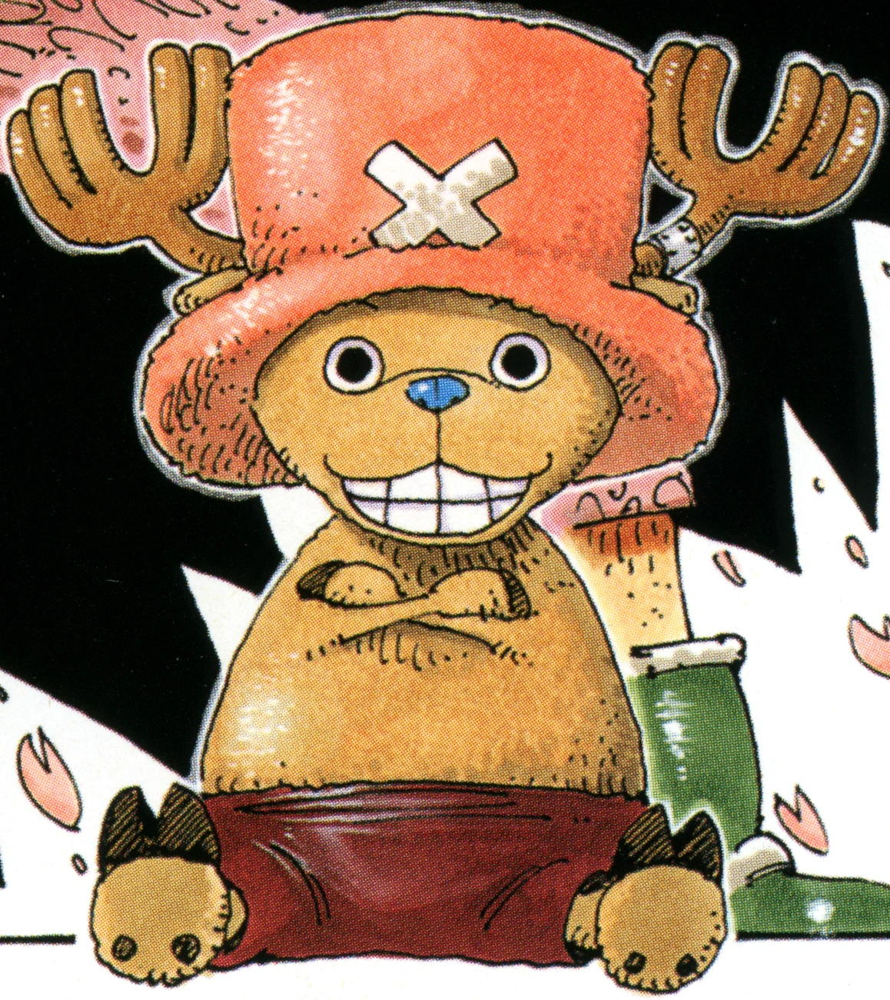

Sobre o Chopper

Chopper comeu uma akuma no mi.
A série acompanha Luffy e seus companheiros.
A História
Ele nasceu como uma rena de nariz azul.
Chopper sofreu muito em sua infância por ser diferente.
Evolução da Série
Os chapéus de palha estão em busca de encontrar o one piece junto de seu capitão.
A série é conhecida por seu equilíbrio entre humor e drama, pela química entre os protagonistas e por sua dedicada base de fãs, conhecida como "SPN Family" (Família SPN).